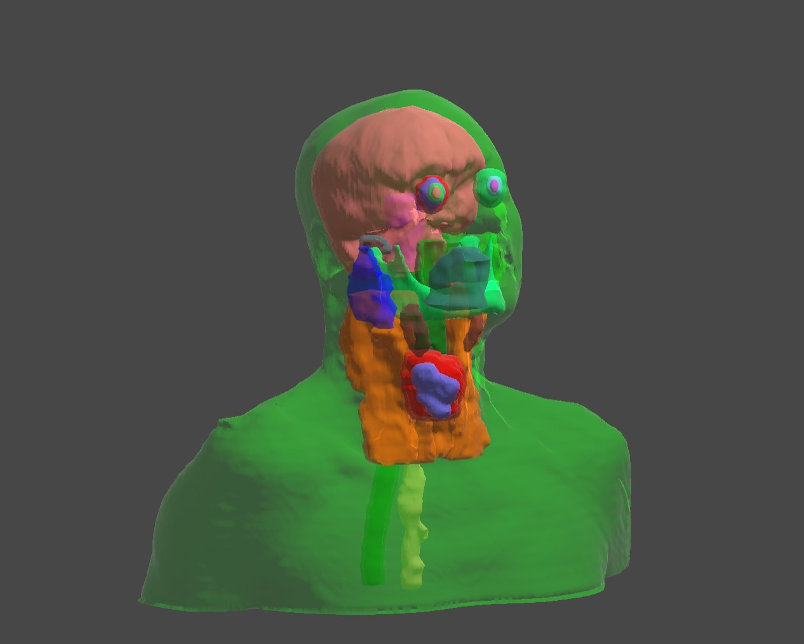
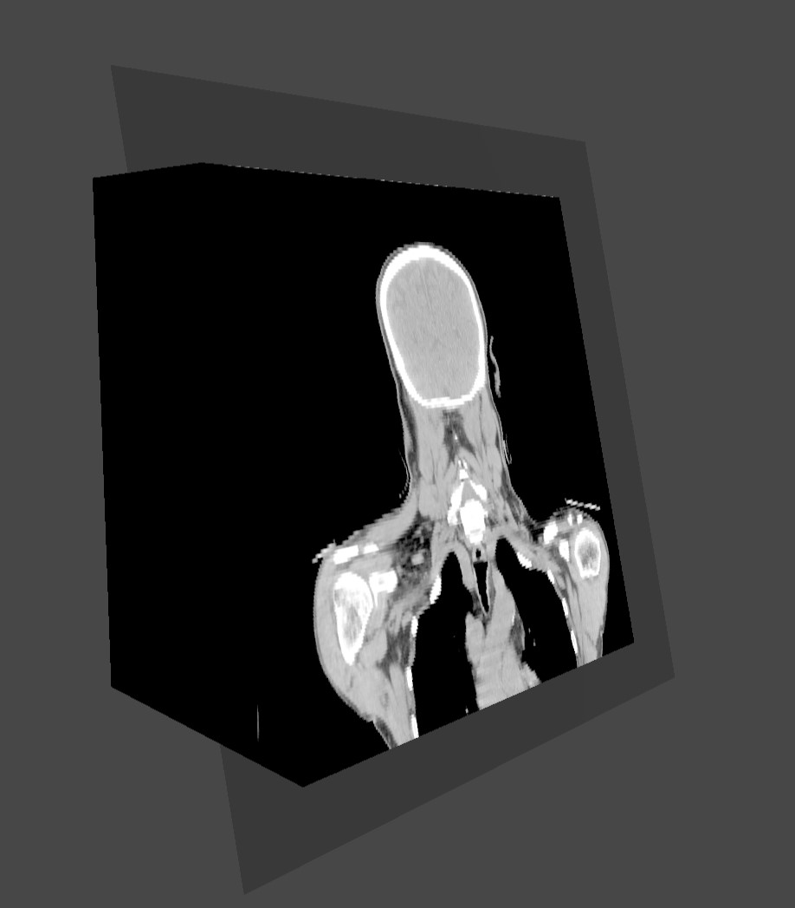
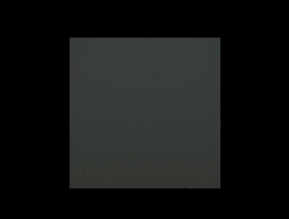
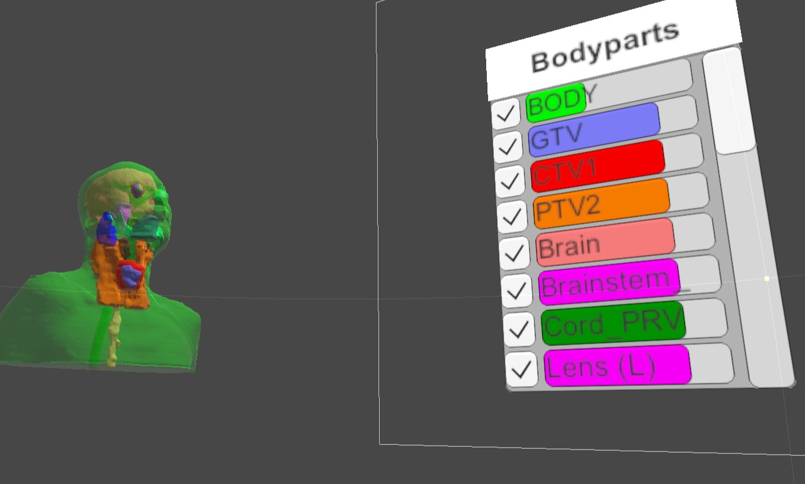

MRI Slicer VR

MRI scans are a stack of images. Working with thousands of scans have been a lengthy and difficult job for the doctors. So this project got proposed: We put all the MRI scans in 3D space, and let the doctor slice them with a VR controller in hand.
MRI scans are stored in DICOM files, which contains all the vertices, window sizes, patient info etc. To render the scans in 3D space, I started by developing a data serializer which extracts positions and colors of all the vertices, and stores them as arrays of Vector3.
Then I developed a shader in CG to draw all the vertices in 3D space. The shader uses Ray Marching to accumulate vertex colors of multiple scans. Since all the scans are squares, I used a cube mesh to get the boundary.
Paired with the volumetric shader, I developed the slicing mechanism by passing the angle of the slicing plane to the shader, calculating the projection plane, and setting all the vertices above that projection plane to be transparent.

I also worked a bit on the UI. But that was not the focus on this prototype. Anyway, here is the final outcome tested in an Oculus headset.


